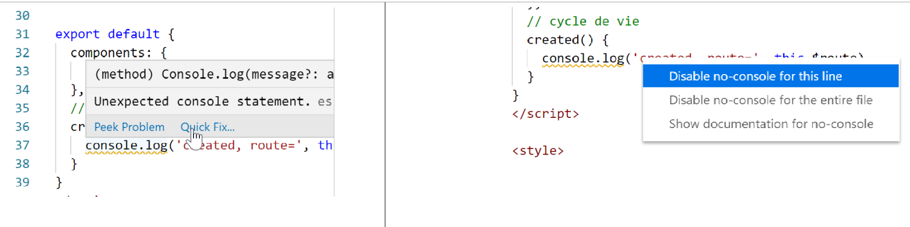
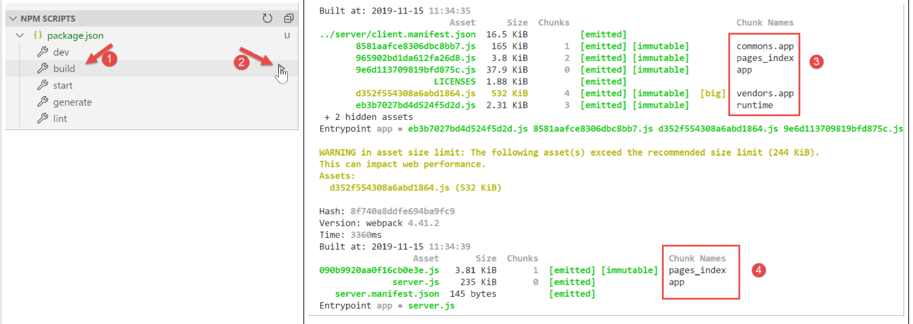
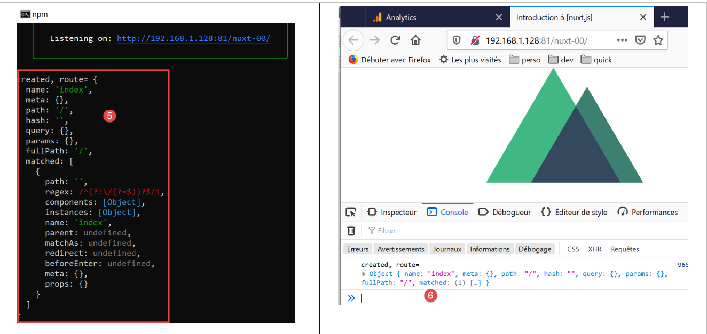
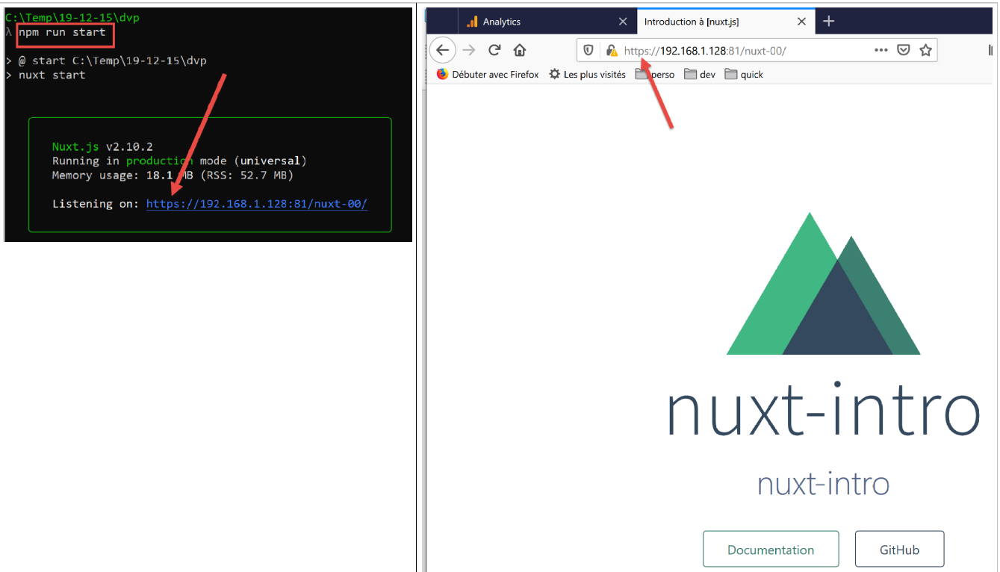

3. Une première application [nuxt.js]
3.1. Création de l’application
Pour nos développements [nuxt.js] nous continuons à utiliser VS Code. Nous avons créé un dossier [dvp] vide dans lequel nous allons mettre nos exemples. Puis nous ouvrons ce dossier :

Nous sauvegardons l’espace de travail sous le nom [intro-nuxtjs] [3-5] :

Nous ouvrons un terminal [6-7] :

Jusqu’à maintenant, nous avons utilisé le gestionnaire de packages Javascript [npm]. Pour changer, nous allons ici utiliser le gestionnaire [yarn]. Celui-ci est installé, comme [npm], avec les récentes versions de [node.js]. Pour créer une première application [nuxt], nous utilisons la commande [yarn create nuxt-app <dossier>] [1]. La commande va demander un certain nombre d’informations sur le projet à générer puis, celles-ci obtenues, va le générer [2] :

En [2], toute une arborescence de fichiers a été créée. Le fichier [package.json] donne la liste des biblothèques Javascript téléchargées dans le dossier [node-modules] [4] :
{
"name": "nuxt-intro",
"version": "1.0.0",
"description": "nuxt-intro",
"author": "serge-tahe",
"private": true,
"scripts": {
"dev": "nuxt",
"build": "nuxt build",
"start": "nuxt start",
"generate": "nuxt generate",
"lint": "eslint --ext .js,.vue --ignore-path .gitignore ."
},
"dependencies": {
"nuxt": "^2.0.0",
"bootstrap-vue": "^2.0.0",
"bootstrap": "^4.1.3",
"@nuxtjs/axios": "^5.3.6"
},
"devDependencies": {
"@nuxtjs/eslint-config": "^1.0.1",
"@nuxtjs/eslint-module": "^1.0.0",
"babel-eslint": "^10.0.1",
"eslint": "^6.1.0",
"eslint-plugin-nuxt": ">=0.4.2",
"eslint-config-prettier": "^4.1.0",
"eslint-plugin-prettier": "^3.0.1",
"prettier": "^1.16.4"
}
}
Ce fichier reflète les réponses données à la commande [create nuxt-app] pour définir le projet créé (novembre 2019). Le lecteur peut avoir un fichier [package.json] différent :
- il a pu donner des réponses différentes aux questions ;
- la commande [create nuxt-app] aura évolué depuis l’écriture de ce document : les dépendances et les versions auront changé ;
La ligne 8 du script est la commande qui lance l’application :

- en [4], on voit que l’application est disponible à l’URL [localhost:3000] ;
- en [5-6], on voit que l’application donne naissance à un serveur [6] et à un client (de ce serveur) [5] ;
Demandons l’URL [http://localhost:3000/] dans un navigateur :

3.2. Description de l’arborescence d’une application [nuxt]
Reprenons l’arborescence de l’application créée :

Le rôle des dossiers est le suivant :
assets | ressources non compilées de l’application (images, ...) ; |
static | les fichiers de ce dossier seront disponibles à la racine de l’application. On met dans ce dossier des fichiers qu’on doit trouver à la racine de l’application comme par exemple le fichier [robots.txt] destiné aux moteurs de recherche ; |
components | les composants [vue] de l’application utilisés dans les [layouts] et les [pages] ; |
layouts | les composants [vue] de l’application servant de mise en page des [pages] ; |
pages | les composants [vue] affichés par les différentes routes de l’application. On pourrait les appeler les vues de l’application. Les pages jouent un rôle particulier dans [nuxt] : les routes sont créées dynamiquement à partir de l’arborescence trouvée dans le dossier [pages] ; |
middleware | les scripts exécutés à chaque changement de route. Ils permettent de contrôler celles-ci ; |
plugins | porte un nom prêtant à confusion. Peut contenir des plugins mais également des scripts classiques. Les scripts trouvés dans ce dossier sont exécutés au démarrage de l’application ; |
store | s’il contient un script [index.js] alors celui-ci définit une instance du store de [Vuex] ; |
Si un dossier est vide, on peut le supprimer de l’arborescence. Ci-dessus, les dossiers [assets, static, middleware, plugins, store] peuvent être supprimés [2].
3.3. Le fichier de configuration [nuxt.config]
L’exécution de l’application est contrôlée par le fichier [nuxt.config.js] suivant :
export default {
mode: 'universal',
/*
** Headers of the page
*/
head: {
title: process.env.npm_package_name || '',
meta: [
{ charset: 'utf-8' },
{ name: 'viewport', content: 'width=device-width, initial-scale=1' },
{
hid: 'description',
name: 'description',
content: process.env.npm_package_description || ''
}
],
link: [{ rel: 'icon', type: 'image/x-icon', href: '/favicon.ico' }]
},
/*
** Customize the progress-bar color
*/
loading: { color: '#fff' },
/*
** Global CSS
*/
css: [],
/*
** Plugins to load before mounting the App
*/
plugins: [],
/*
** Nuxt.js dev-modules
*/
buildModules: [
// Doc: https://github.com/nuxt-community/eslint-module
'@nuxtjs/eslint-module'
],
/*
** Nuxt.js modules
*/
modules: [
// Doc: https://bootstrap-vue.js.org
'bootstrap-vue/nuxt',
// Doc: https://axios.nuxtjs.org/usage
'@nuxtjs/axios'
],
/*
** Axios module configuration
** See https://axios.nuxtjs.org/options
*/
axios: {},
/*
** Build configuration
*/
build: {
/*
** You can extend webpack config here
*/
extend(config, ctx) {}
}
}
- ligne 2 : le type d’application générée :
- [universal] : application client / serveur. Au chargement initial de l’application ainsi qu’à chaque rafraîchissement de page dans le navigateur, le serveur est sollicité pour délivrer la page ;
- [sap] : application de type [Single Page Application] : un serveur délivre initialement la totalité de l’application. Ensuite le client opère seul, même en cas de rafraîchissement d’une page dans le navigateur ;
- lignes 6-18 : définissent l’entête HTML <head> des différentes pages de l’application :
- ligne 7 : la balise <title> du titre des pages ;
- lignes 8-16 : les balises <meta> ;
- ligne 17 : les balises <link>
Dans l’application générée, la balise <head> est la suivante (code source de la page affichée dans le navigateur) :
<title>nuxt-intro</title>
<meta data-n-head="ssr" charset="utf-8">
<meta data-n-head="ssr" name="viewport" content="width=device-width, initial-scale=1">
<meta data-n-head="ssr" data-hid="description" name="description" content="nuxt-intro">
<link data-n-head="ssr" rel="icon" type="image/x-icon" href="/favicon.ico">
<link rel="preload" href="/_nuxt/runtime.js" as="script">
<link rel="preload" href="/_nuxt/commons.app.js" as="script">
<link rel="preload" href="/_nuxt/vendors.app.js" as="script">
<link rel="preload" href="/_nuxt/app.js" as="script">
Maintenant, modifions le fichier [nuxt.config] de la façon suivante :
head: {
title: 'Introduction à [nuxt.js]',
meta: [
{ charset: 'utf-8' },
{ name: 'viewport', content: 'width=device-width, initial-scale=1' },
{
hid: 'description',
name: 'description',
content: 'ssr routing loading asyncdata middleware plugins store'
}
],
link: [{ rel: 'icon', type: 'image/x-icon', href: '/favicon.ico' }]
},
Lorsque nous réexécutons l’application, la balise <head> est devenue la suivante (code source de la page affichée dans le navigateur) :
<head >
<title>Introduction à [nuxt.js]</title>
<meta data-n-head="ssr" charset="utf-8">
<meta data-n-head="ssr" name="viewport" content="width=device-width, initial-scale=1">
<meta data-n-head="ssr" data-hid="description" name="description" content="ssr routing loading asyncdata middleware plugins store">
<link data-n-head="ssr" rel="icon" type="image/x-icon" href="/favicon.ico">
<link rel="preload" href="/_nuxt/runtime.js" as="script">
<link rel="preload" href="/_nuxt/commons.app.js" as="script">
<link rel="preload" href="/_nuxt/vendors.app.js" as="script">
<link rel="preload" href="/_nuxt/app.js" as="script">
Revenons au fichier [nuxt.config] :
export default {
mode: 'universal',
/*
** Headers of the page
*/
head: {
...
},
/*
** Customize the progress-bar color
*/
loading: { color: '#fff' },
/*
** Global CSS
*/
css: [],
/*
** Plugins to load before mounting the App
*/
plugins: [],
/*
** Nuxt.js dev-modules
*/
buildModules: [
// Doc: https://github.com/nuxt-community/eslint-module
'@nuxtjs/eslint-module'
],
/*
** Nuxt.js modules
*/
modules: [
// Doc: https://bootstrap-vue.js.org
'bootstrap-vue/nuxt',
// Doc: https://axios.nuxtjs.org/usage
'@nuxtjs/axios'
],
/*
** Axios module configuration
** See https://axios.nuxtjs.org/options
*/
axios: {},
/*
** Build configuration
*/
build: {
/*
** You can extend webpack config here
*/
extend(config, ctx) {}
}
}
- ligne 12 : entre chaque route du client [nuxt], une barre de chargement (loading) apparaît si le changement de route prend un peu de temps. La propriété [loading] permet de paramétrer cette barre de chargement, ici la couleur de la barre ;
- ligne 16 : les fichiers [css] globaux. Ils seront automatiquement inclus dans toutes les pages de l’application ;
- lignes 24-27 : les modules Javascript nécessaires à la compilation (build) de l’application ;
- lignes 31-36 : les modules Javascript utilisés par l’application ;
- ligne 41 : paramétrage de la bibliothèque [axios] lorsque celle-ci a été sélectionnée par l’utilisateur pour les dialogues HTTP avec des serveurs tiers ;
- lignes 45-50 : paramétrage de la compilation (build) du projet ;
On peut ajouter d’autres clés au fichier de configuration. On peut notamment paramétrer le port de service (3000 par défaut) et la racine du projet (par défaut, le dossier racine du projet). C’est ce que nlous faisons maintenant en ajoutant les clés suivantes :
// répertoire du code source
srcDir: '.',
router: {
// URL racine des pages de l’application
base: '/nuxt-intro/'
},
// serveur
server: {
// port de service - par défaut 3000
port: 81,
// adresses réseau écoutées - par défaut localhost=127.0.0.1
host: '0.0.0.0'
}
- ligne 2 : où trouver le code source du projet. On le trouve ici dans le dossier courant, ç-à-d au même niveau que le fichier [nuxt.config.js]. C’est la valeur par défaut ;
- lignes 8-13 : configurent le serveur (il ne faut pas oublier qu’une application [nuxt] de type [universal] est installée à la fois sur un serveur et un navigateur client de ce serveur) ;
- ligne 10 : les pages de l’application seront délivrées sur le port 81 du serveur ;
- ligne 12 : par défaut [localhost] (adresse réseau 127.0.0.1). Une machine peut avoir plusieurs adresses réseau si elle appartient à plusieurs réseaux. L’adresse 0.0.0.0 indique que le serveur web écoute toutes les adresses réseau de la machine ;
- lignes 3-6 : configurent le routeur de l’applicatio [nuxt] ;
- ligne 5 : les pages de l’application seront disponibles à l’URL [http://localhost:81/nuxt-intro/];
Ajoutons ces lignes au fichier [nuxt.config.js] puis exécutons le projet (script npm dev). Le résultat est le suivant :
- en [1], l’adresse de la machine sur un réseau public ;
- en [2], le port de service ;
- en [3], l’URL racine de l’application ;
3.4. Le dossier [layouts]

Le dossier [layouts] est destiné aux composants de mise en page. Par défaut, c’est le composant nommé [default.vue] qui est utilisé. Dans ce projet, celui-ci est le suivant :
<template>
<div>
<nuxt />
</div>
</template>
<style>
html {
font-family: 'Source Sans Pro', -apple-system, BlinkMacSystemFont, 'Segoe UI',
Roboto, 'Helvetica Neue', Arial, sans-serif;
font-size: 16px;
word-spacing: 1px;
-ms-text-size-adjust: 100%;
-webkit-text-size-adjust: 100%;
-moz-osx-font-smoothing: grayscale;
-webkit-font-smoothing: antialiased;
box-sizing: border-box;
}
*,
*:before,
*:after {
box-sizing: border-box;
margin: 0;
}
.button--green {
display: inline-block;
border-radius: 4px;
border: 1px solid #3b8070;
color: #3b8070;
text-decoration: none;
padding: 10px 30px;
}
.button--green:hover {
color: #fff;
background-color: #3b8070;
}
.button--grey {
display: inline-block;
border-radius: 4px;
border: 1px solid #35495e;
color: #35495e;
text-decoration: none;
padding: 10px 30px;
margin-left: 15px;
}
.button--grey:hover {
color: #fff;
background-color: #35495e;
}
</style>
Commentaires
- lignes 1-5 : le [template] du composant ;
- ligne 3 : la balise <nuxt /> désigne la page courante du routage ;
- lignes 7-55 : le style embarqué par le composant de mise en page. Comme celui-ci contient la page courante du routage, ce style va s’appliquer à toutes les pages routées de l’application ;
On voit que le but premier de la page [default.vue] est ici d’appliquer un style aux pages routées.
3.5. Le dossier [pages]

Le dossier [pages] contient les vues routées, celles que voit l’utilisateur. La page [index.vue] est la page d’accueil de l’application. Avec [nuxt.js], il n’y a pas de fichier de routage. Les routes sont déterminées à partir de la structure du dossier [pages]. Ici la présence d’un fichier [index.vue] va automatiquement crééer une route appelée [index] et de chemin [/index] ramené à [/] puisqu’il s’agit de la page d’accueil. Ainsi la route suivante est créée :
Le fichier [index.vue] est ici le suivant :
<template>
<div class="container">
<div>
<logo />
<h1 class="title">
nuxt-intro
</h1>
<h2 class="subtitle">
nuxt-intro
</h2>
<div class="links">
<a href="https://nuxtjs.org/" target="_blank" class="button--green">
Documentation
</a>
<a
href="https://github.com/nuxt/nuxt.js"
target="_blank"
class="button--grey"
>
GitHub
</a>
</div>
</div>
</div>
</template>
<script>
import Logo from '~/components/Logo.vue'
export default {
components: {
Logo
}
}
</script>
<style>
.container {
margin: 0 auto;
min-height: 100vh;
display: flex;
justify-content: center;
align-items: center;
text-align: center;
}
.title {
font-family: 'Quicksand', 'Source Sans Pro', -apple-system, BlinkMacSystemFont,
'Segoe UI', Roboto, 'Helvetica Neue', Arial, sans-serif;
display: block;
font-weight: 300;
font-size: 100px;
color: #35495e;
letter-spacing: 1px;
}
.subtitle {
font-weight: 300;
font-size: 42px;
color: #526488;
word-spacing: 5px;
padding-bottom: 15px;
}
.links {
padding-top: 15px;
}
</style>
Le [template] des lignes 1-25 affichent la vue suivante :

L’image [1] est générée par la ligne 4 du [template]. On voit donc que la page utilise un composant appelé [logo]. Celui-ci est défini aux lignes 27-35 du script de la page. Ligne 28, la notation [~] désigne la racine du projet.
3.6. Le composant [Logo]

Le composant [Logo.vue] est le suivant :
<template>
<div class="VueToNuxtLogo">
<div class="Triangle Triangle--two" />
<div class="Triangle Triangle--one" />
<div class="Triangle Triangle--three" />
<div class="Triangle Triangle--four" />
</div>
</template>
<style>
.VueToNuxtLogo {
display: inline-block;
animation: turn 2s linear forwards 1s;
transform: rotateX(180deg);
position: relative;
overflow: hidden;
height: 180px;
width: 245px;
}
.Triangle {
position: absolute;
top: 0;
left: 0;
width: 0;
height: 0;
}
.Triangle--one {
border-left: 105px solid transparent;
border-right: 105px solid transparent;
border-bottom: 180px solid #41b883;
}
.Triangle--two {
top: 30px;
left: 35px;
animation: goright 0.5s linear forwards 3.5s;
border-left: 87.5px solid transparent;
border-right: 87.5px solid transparent;
border-bottom: 150px solid #3b8070;
}
.Triangle--three {
top: 60px;
left: 35px;
animation: goright 0.5s linear forwards 3.5s;
border-left: 70px solid transparent;
border-right: 70px solid transparent;
border-bottom: 120px solid #35495e;
}
.Triangle--four {
top: 120px;
left: 70px;
animation: godown 0.5s linear forwards 3s;
border-left: 35px solid transparent;
border-right: 35px solid transparent;
border-bottom: 60px solid #fff;
}
@keyframes turn {
100% {
transform: rotateX(0deg);
}
}
@keyframes godown {
100% {
top: 180px;
}
}
@keyframes goright {
100% {
left: 70px;
}
}
</style>
Ce composant est essentiellement constitué de styles et d’animations pour créer une image animée.
3.7. Vue DevTools
[Vue DevTools] est l’extension de navigateur qui permet d’inspecter les objets [nuxt.js] et [vue.js] dans le navigateur. Nous l’avons déjà utilisée dans le chapitre sur [vue.js]. Examinons ce que cet outil trouve lorsque la page d’accueil de notre application est affichée :

- en [1], le composant [PagesIndex] désigne la page [pages/index.vue] ;
- on voit en [2] que ce composant a une propriété [$route] qui est la route qui a amené à la page [index] ;
Comme simple exercice, affichons cette route dans la console.
3.8. Modification de la page d’accueil
Nous allons modifier le fichier [index.vue]. Dans notre installation du projet, nous avons installé deux dépendances :
- [eslint] : qui vérifie la syntaxe des fichiers Javascript et des composants Vue. Si l’extension [ESLint] de VSCode a été installée, cette syntaxe est vérifiée lors de la frappe des textes et les erreurs sont immédiatement signalées ;
- [prettier] : qui formate les codes Javascript d’une façon standard ;
Ces dépendances sont inscrites dans le fichier [package.json] :
"devDependencies": {
"@nuxtjs/eslint-config": "^1.0.1",
"@nuxtjs/eslint-module": "^1.0.0",
"babel-eslint": "^10.0.1",
"eslint": "^6.1.0",
"eslint-config-prettier": "^4.1.0",
"eslint-plugin-nuxt": ">=0.4.2",
"eslint-plugin-prettier": "^3.0.1",
"prettier": "^1.16.4"
}
J’ai pu remarquer (nov 2019) qu’avec l’installation faite par la commande [yarn create nuxt-app], les outils [eslint, prettier] ne fonctionnent pas lors de la frappe des textes. Les erreurs ne sont signalées qu’à la compilation. Après quelques recherches, j’ai trouvé une configuration qui marche :

On installe à la racine du projet, un dossier [.vscode] avec dedans le fichier [settings.json] suivant :
{
"eslint.validate": [
{
"language": "vue",
"autoFix": true
},
{
"language": "javascript",
"autoFix": true
}
],
"eslint.autoFixOnSave": true,
"editor.formatOnSave": false
}
- lignes 2-11 : indiquent que lorsque [eslint] valide les fichiers .vue et .js il doit corriger les erreurs qu’il peut corriger ;
- ligne 12 : lorsqu’un fichier est sauvegardé, [eslint] doit corriger les erreurs qu’il peut corriger ;
- ligne 13 : inhibe le formatage fait par défaut dans VSCode lors d’une sauvegarde. C’est [prettier] qui le fera ;
Avec cette configuration :
- les erreurs de syntaxe ou de formatage sont signalées dès la frappe des textes ;
- les erreurs de formatage sont automatiquement corrigées lors de la sauvegarde du fichier ;
La bibliothèque [prettier] est configurée par le fichier [.prettierrc] :

Ce fichier est par défaut le suivant :
{
"semi": false,
"arrowParens": "always",
"singleQuote": true
}
- ligne 1 : pas de ; à la fin des instructions ;
- ligne 2 : si une fonction ‘flèche’ (arrow) a un unique paramètre, celui-ci est entouré de parenthèses ;
- ligne 3 : les chaînes de caractères sont entourées d’apostrophes (pas de guillemets) ;
Nous ajoutons les deux règles suivantes :
{
"semi": false,
"arrowParens": "always",
"singleQuote": true,
"printWidth": 120,
"endOfLine": "auto"
}
- ligne 5 : la ligne de code peut faire jusqu’à 120 caractères ;
- ligne 6 : la marque de fin de ligne peut être indifféremment CRLF (windows) ou LF (unix) ;
Enfin, le fichier [package.json] est modifié de la façon suivante :
"scripts": {
"dev": "nuxt",
"build": "nuxt build",
"start": "nuxt start",
"generate": "nuxt generate",
"lint": "eslint --ext .js,.vue --ignore-path .gitignore .",
"lintfix": "eslint --fix --ext .js,.vue --ignore-path .gitignore ."
},
- ligne 7 : nous ajoutons la commande [lintfix] qui est identique à la commande [lint] de la ligne 6 si ce n’est qu’elle a en plus le paramètre [--fix]. La commande [lint] vérifie la syntaxe et le format de tous les fichiers du projet et signale toute erreur. [lintfix] fera la même chose si ce n’est que les problèmes de formatage qui peuvent être corrigés le seront automatiquement. [lintfix] sera la commande à utiliser si la compilation échoue à cause de problèmes de formatage de fichiers ;
Ceci fait, nous modifions le fichier [index.vue] de la façon suivante :

<script>
/* eslint-disable no-console */
import Logo from '~/components/Logo.vue'
export default {
components: {
Logo
},
// cycle de vie
created() {
console.log('created, route=', this.$route)
}
}
</script>
- lignes 10-12 : on ajoute la fonction [created] qui est automatiquement exécutée lorsque le composant a été créé ;
- ligne 11 : on affiche la route courante ;
- ligne 2 : un commentaire destiné à [eslint]. Sans ce commentaire, [eslint] signale une erreur ligne 11 : il ne veut pas d’instructions [console] dans les fonctions du cycle de vie. [eslint] est configurable. Nous allons garder sa configuration par défaut et nous utiliserons des commentaires tels que celui de la ligne 2 pour désactiver une règle précise de [eslint]. Nous utiliserons deux types de commentaires :
- /* désactivation règle [eslint] */ : désactivation d’une règle pour tout le fichier ;
- // désactivation règle [eslint] : désactivation d’une règle pour la ligne qui suit ;
Lors de la frappe, les erreurs sont signalées et une fonction [Quick Fix] disponible :

On exécute le projet :

- en [1], l’onglet [Vue] des outils de développement du navigateur (F12) ;
- en [2] et [3], l’affichage de la route ;
Pourquoi deux affichages et non un seul ?
Une application [nuxt] se décompose de deux éléments, un serveur et un client :
- le serveur fournit les pages de l’application au démarrage de celle-ci et puis à chaque fois qu’une page est rafraîchie dans le navigateur (F5) ou bien que l’utilisateur tape une URL de l’application à la main ;
- chaque page fournie par le navigateur contient la page demandée ainsi que le code Javascript de toute l’application qui est ensuite exécutée sur le navigateur. C’est le client. Tant qu’il n’y a pas rafraîchissement de page sur le navigateur, l’application fonctionne comme une application Vue classique en mode [sap] (Single Page Application). Dès que l’utilisateur provoque manuellement un rafraîchissement de page, celle-ci est demandée au serveur et on retourne à la phase 1 précédente.
Ce qu’il faut comprendre, c’est que ce sont les mêmes pages du dossier [pages] qui sont fournies par le serveur ou le client. Pour cette raison, les concepteurs de [nuxt] appellent ce type de pages, des pages isomorphiques. Les mêmes pages [.vue] peuvent être interprétées à la fois par le client et le serveur. Prenons l’exemple de la page [index] :
<template>
<div class="container">
<div>
<logo />
<h1 class="title">
nuxt-intro
</h1>
<h2 class="subtitle">
nuxt-intro
</h2>
<div class="links">
<a href="https://nuxtjs.org/" target="_blank" class="button--green">
Documentation
</a>
<a
href="https://github.com/nuxt/nuxt.js"
target="_blank"
class="button--grey"
>
GitHub
</a>
</div>
</div>
</div>
</template>
<script>
/* eslint-disable no-console */
import Logo from '~/components/Logo.vue'
export default {
components: {
Logo
},
// cycle de vie
created() {
console.log('created, route=', this.$route)
}
}
</script>
Comme c’est la page d’accueil, au démarrage de l’application elle est servie par le serveur. La page sur le serveur a également un cycle de vie, le même que celle d’une page [Vue] classique sauf pour les fonctions [beforeMount, monted] qui n’existent pas côté serveur. La fonction [created] est elle exécutée ce qui explique le 1er log. Cela signifie au passage que le serveur est capable d’exécuter des scripts Javascript. Ici et en général, ce serveur est un serveur [node.js]. Une fois la page créée sur le serveur, elle arrive sur le navigateur où elle subit de nouveau le cycle de vie. La fonction [created] est exécutée une seconde fois, ce qui donne le 2ième log.
L’architecture d’une application [nuxt] pourrait être la suivante :

- [1] : le navigateur qui héberge l’application [nuxt] lorsque celle-ci a été chargée sur le navigateur. C’est ce qu’on a appelé le client [nuxt] ;
- [3] : le serveur qui héberge initialement l’application [nuxt]. Celle-ci est chargée sur le navigateur [1] au démarrage de l’application et à chaque fois que l’utilisateur rafraîchit la page courante du navigateur ou tape à la main une URL de l’application. C’est là que se situe la différence de fonctionnement avec une application Vue classique. Avec celle-ci, une fois chargée sur le navigateur, le serveur n’était plus jamais sollicité par la suite. Une autre différence importante qu’on n’a pas pu voir pour l’instant est que le serveur d’une application Vue est un serveur statique, incapable d’interpréter les pages [.vue], alors que celui d’une application Nuxt de type [universal] est un serveur Javascript. Avant d’envoyer une page au navigateur, le serveur peut exécuter des scripts et aller par exemple chercher des données sur le serveur [2] ;
- [2] : est le serveur qui fournit des données soit au client [nuxt] [1], soit au serveur [nuxt] [3] ;
On peut dans le schéma ci-dessus distinguer trois sous-systèmes client / serveur :
- [1, 3] : héberge l’application [nuxt]. [3] la fournit au démarrage de l’application avec la page d’accueil et à chaque fois que l’utilisateur demande une page manuellement. [1] héberge l’application [nuxt] reçue de [3] qui fonctionne alos en mode [SAP] tant que les pages ne sont pas demandées manuellement à [3] ;
- [1, 2] : en mode [SAP], le client [nuxt] récupère des données externes auprès d’un ou plusieurs serveurs ;
- [3, 2] : lors de la génération de la page demandée par l’utilisateur, le serveur [3] peut lui aussi récupérer des données externes auprès d’un ou plusieurs serveurs ;
C’est donc le serveur [3] qui distingue une application [nuxt] d’une application [vue]. Ce serveur est sollicité à chaque fois que l’utilisateur demande une page manuellement. Il traite les mêmes pages [.vue] que le client [vue] [1]. C’est un serveur Javascript capable d’exécuter les scripts présents dans la page. Cela peut modifier par exemple la façon de générer la page d’accueil avec des données externes : là où une application [vue] obtient celles-ci forcément à partir du client [1], ici elles peuvent être obtenues par le serveur [3] avant que la page ne soit envoyée au client. La page d’accueil devient ainsi signifiante et peut contribuer à améliorer le SEO de l’application.
Note : en mode développement les trois entités [1, 2, 3] sont souvent sur la même machine. Ce sera le cas ici pour tous nos exemples.
3.9. Déplacement du code source de l’application dans un dossier séparé
Par la suite, nous allons créer diverses applications [nuxt] dans le même dossier [dvp]. En effet, le dossier des dépendances [node_modules] généré pour chaque projet [nuxt] peut faire plusieurs centaines de méga-octets. On va créer divers dossiers [nuxt-00, nuxt-01, ...] dans le dossier [dvp] pour contenir le code source des exemples à tester. Puis nous utiliserons le fichier de configuration [nuxt-config.js] pour indiquer où se trouve le code source du projet [dvp] qui restera l’unique projet [nuxt] de ce tutoriel.
Nous déplaçons le code source de l’application générée initialement par la commande [yarn create nuxt-app] dans un dossier [nuxt-00] :

- en [2], on a déplacé les dossiers [components, layouts, pages] dans un dossier [nuxt-00] ;
- en [3], il nous faut modifier le fichier [nuxt.config.js] ;
Nous modifions le le fichier [nuxt.config.js] de la façon suivante :
export default {
mode: 'universal',
/*
** Headers of the page
*/
...
/*
** Build configuration
*/
build: {
/*
** You can extend webpack config here
*/
extend(config, ctx) {}
},
// répertoire du code source
srcDir: 'nuxt-00',
// routeur
router: {
// racine des URL de l'application
base: '/nuxt-00/'
},
// serveur
server: {
// port de service, 3000 par défaut
port: 81,
// adresses réseau écoutées, par défaut localhost : 127.0.0.1
// 0.0.0.0 = toutes les adresses réseau de la machine
host: '0.0.0.0'
}
}
Le fichier est modifié en deux points :
- ligne 17 : on indique que le code source du projet [dvp] est à trouver dans le dossier [nuxt-00] ;
- ligne 21 : on indique que l’URL racine de l’application est désormais [/nuxt-00/]. Ce changement n’était pas obligatoire. On pourrait ne pas mettre cette propriété et la racine des URL serait alors [/]. Ici, cela nous permettra de nous souvenir que le code source exécuté est celui du dossier [nuxt-00] ;
Ceci fait, le projet [dvp] est exécuté comme précédemment :

3.10. Déploiement de l’application [nuxt-00]
Nous allons exécuter l’application [nuxt-00] dans un environnement autre que l’environnement intégré de VSCode.
Tout d’abord nous compilons l’application :

- en [3], le résultat de la compilation du client. Sera exécuté par le navigateur ;
- en [4], le résultat de la compilation du serveur. Sera exécuté par le serveur [node.js] ;
Le résultat de la compilation est placé dans le dossier [.nuxt] :

Nous copions les dossiers [.nuxt, node_modules] et les fichiers [package.json, nuxt.config.js] dans un dossier séparé :

Le fichier [package.json] est simplifié de la façon suivante :
{
"scripts": {
"start": "nuxt start"
}
}
- on ne garde que le script [start] qui permet d’exécuter la version compilée du projet ;
Le fichier [nuxt.config.js] est simplifié de la façon suivante :
export default {
// routeur
router: {
// racine des URL de l'application
base: '/nuxt-00/'
},
// serveur
server: {
// port de service, 3000 par défaut
port: 81,
// adresses réseau écoutées, par défaut localhost : 127.0.0.1
// 0.0.0.0 = toutes les adresses réseau de la machine
host: '0.0.0.0'
}
}
- ligne 5 : on fixe l’URL de base de l’application compilée ;
- lignes 8-14 : on définit le port de service et les adresses réseau écoutées ;
Ceci fait, on ouvre un terminal Laragon et on se positionne dans le dossier contenant la version compilée du projet. On peut ouvrir tout type de terminal mais il faut que l’exécutable [npm] soit dans le PATH du terminal. C’est le cas pour le terminal Laragon.
Ceci fait, on tape la commande [npm run start] :

En [3], on voit qu’un serveur a été lancé et qu’il écoute à l’URL [http://192.168.1.128:81/nuxt-00/]. Maintenant demandons cette URL avec un navigateur [4]. On a bien la même chose qu’auparavant. Côté terminal, des logs ont été écrits [5]. C’est le log placé dans la méthode [created] de la page [index.vue] qui a été exécutée par le serveur [node.js].

Côté navigateur [6], on retrouve également le log de la méthode [created] de la page [index.vue] mais exécutée cette fois par le client.
3.11. Mise en place d’un serveur sécurisé
Ci-dessus, l’URL de l’application est [http://192.168.1.128/nuxt-00/]. On voudrait qu’elle soit [https://192.168.1.128/nuxt-00/]. Il nous faut donc construire un serveur sécurisé. Nous montrons comment procéder.
Note : la méthode a été tirée de l’article [https://stackoverflow.com/questions/56966137/how-to-run-nuxt-npm-run-dev-with-https-in-localhost].
Tout d’abord nous créons une clé privée et une clé publique avec [openssl]. [openssl] est normalement installé en même temps que le serveur Laragon. Du coup, cette commande est disponible dans tout terminal Laragon. Ouvrons donc un terminal Laragon et positionnons-nous sur le dossier de l’application déployée :


- en [2], on tape la commande [openssl genrsa 2048 > server.key] ;
- en [3], un fichier [server.key] est créé ;
- en [4], on tape la commande [openssl req -new -x509 -nodes -sha256 -days 365 -key server.key -out server.crt] ;
- en [5], un fichier [server.crt] est créé ;
Ces deux fichiers constituent un certificat autosigné. La plupart des navigateurs ne les acceptent qu’après approbation de l’utilisateur ayant demandé la page.
Les fichiers [server.key, server.crt] doivent être maintenant utilisés par l’application web. Pour cela le fichier [nuxt.config.js] doit être modifié de la façon suivante :
import path from 'path'
import fs from 'fs'
export default {
// routeur
router: {
// racine des URL de l'application
base: '/nuxt-00/'
},
// serveur
server: {
// port de service, 3000 par défaut
port: 81,
// adresses réseau écoutées, par défaut localhost : 127.0.0.1
// 0.0.0.0 = toutes les adresses réseau de la machine
host: '0.0.0.0',
// certificat autosigné
https: {
key: fs.readFileSync(path.resolve(__dirname, 'server.key')),
cert: fs.readFileSync(path.resolve(__dirname, 'server.crt'))
}
}
}
Ce sont les lignes 18-21 qui mettent en place le protocole [https].
Maintenant réexécutons l’application :

3.12. Fin du premier exemple
Le premier exemple est désormais terminé. Il nous a appris beaucoup de concepts de [nuxt]. Nous allons maintenant développer d’autres exemples que nous placerons dans des dossiers [nuxt-01, nuxt-02, ...]. Comme ces exemples utiliseront un fichier [nuxt.config.js] différent, nous sauvegarderons dans chacun de ces dossiers, le fichier [nuxt.config.js] qui a servi à les exécuter :